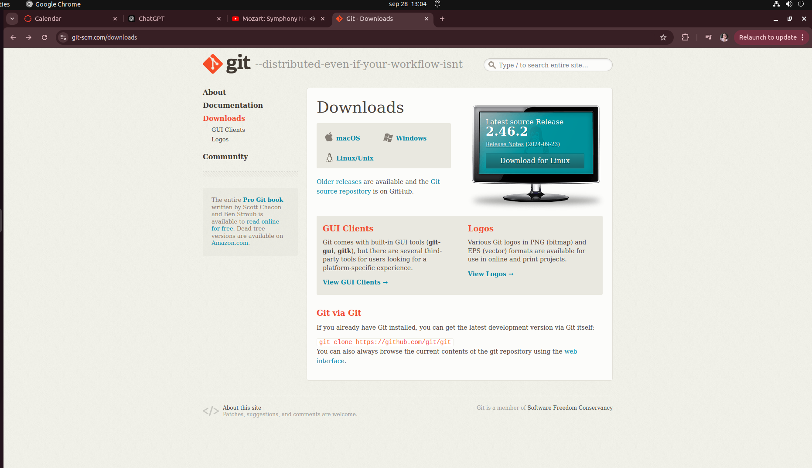
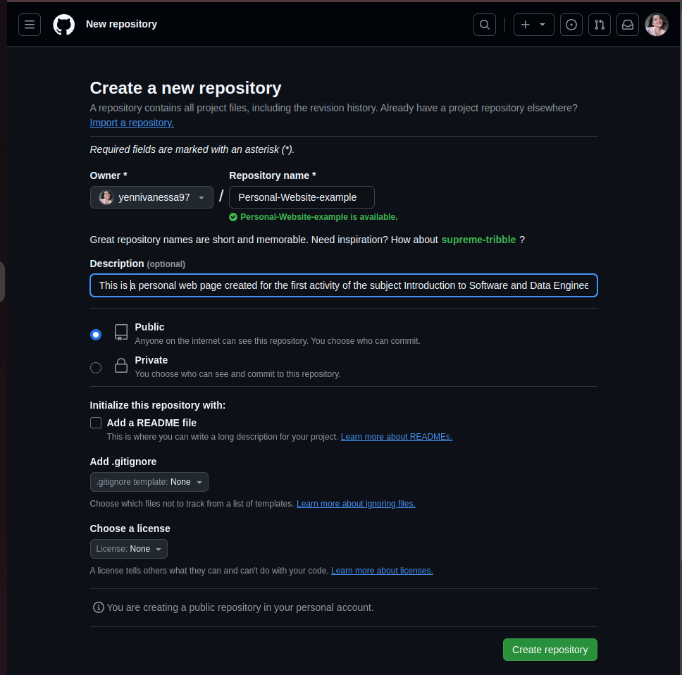

Guía de Configuración de Git y GitHub
En este tutorial, aprenderás cómo instalar y configurar Git, así como vincularlo con GitHub para gestionar tus repositorios de manera eficiente.
Paso 1: Instalación de Git
Primero, necesitamos instalar Git. Dependiendo del sistema operativo, los pasos varían. Visita el sitio oficial de Git para descargar la versión adecuada.
Como en mi caso el sistema operativo que estoy utilizando es linux los pasos que se deben realizar desde la terminal son:
1. Verificar la instalación de git
git --version
Como aparece la versión de git, significa que ya está instalada,en el caso de que no apareciera la versión de git lo que se debe hacer para instalarlo es:
1.1 Actualizar la lista de paquetes
sudo apt update1.2 Instalar git
sudo apt install git1.3 Verificar la instlación
git --versionPaso 2: Configuración inicial de Git
Una vez instalado, abre la terminal y configura tu nombre, correo electrónico y verifica la configuración con los siguientes comandos:
git config --global user.name "Tu Nombre"git config --global user.email "tuemail@dominio.com"git config --listPaso 3: Inicializar un repositorio de git
Cuando ya hayas realizado las configuraciones iniciales puedes inicializar un repositorio de git siguiendo los siguientes pasos:
1.1 Si aún no tienes una carpeta para tu proyecto la puedes crear desde la terminal desde la ruta en donde quiere ubicarlo
mkdir nombre-proyectocd nombre-proyecto
1.2 Inicializa el repositorio utilizando el siguiente comando
git init1.3 Agrega los archivos al repositorio y confirma los cambios
Con este comando se agregan todos los archivos al area de staging (area de preparación):
git add .Para guardar los cambios que agregaste al área de preparación, haz un commit. Un commit es como una "foto" de tu proyecto en un momento específico:
git commit -m "Mensaje descriptivo de los cambios"Paso 3: Crear un repositorio en GitHub
Ahora crea un nuevo repositorio en GitHub. Ve a tu cuenta de GitHub y selecciona New Repository. Dale un nombre a tu repositorio y elige si deseas que sea público o privado.
Paso 4: Clonar el repositorio
Para trabajar localmente con el repositorio recién creado, usa el siguiente comando en tu terminal:
git clone https://github.com/tuusuario/turepositorio.git
Paso 5: Agregar y hacer commit de cambios
Realiza cambios en tu proyecto y usa los siguientes comandos para agregarlos y hacer un commit:
git add .git commit -m "Mensaje del commit"
Paso 6: Hacer push de los cambios
Finalmente, empuja tus cambios al repositorio remoto en GitHub con:
git push origin main